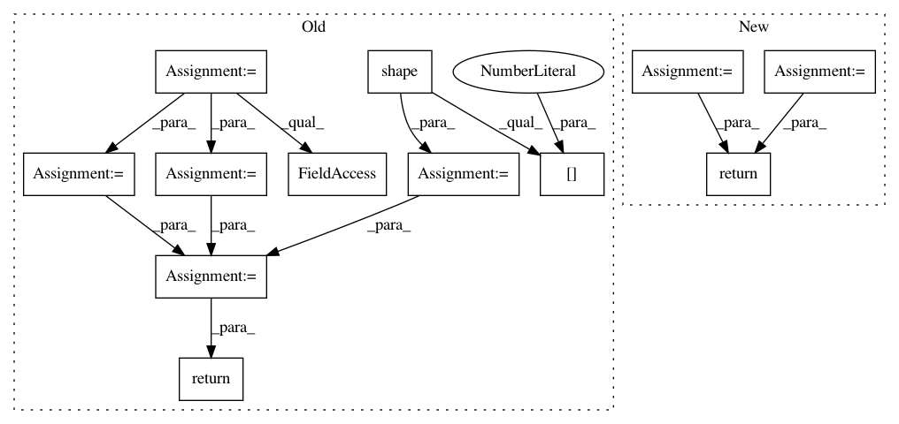

db4c8744b0c7fa95502e1172dd4c597e62e55b0e,tensorrec/loss_graphs.py,WMRBLossGraph,loss_graph,#WMRBLossGraph#Any#Any#Any#,97
Before Change
def loss_graph(self, tf_prediction, tf_interactions, tf_sample_predictions, **kwargs):
positive_interaction_mask = tf.greater(tf_interactions.values, 0.0)
positive_interaction_indices = tf.boolean_mask(tf_interactions.indices,
positive_interaction_mask)
positive_predictions = tf.gather_nd(tf_prediction, indices=positive_interaction_indices)
n_sampled_items = tf.cast(tf.shape(tf_sample_predictions)[1], dtype=tf.float32)
predictions_sum_per_user = tf.reduce_sum(tf_sample_predictions, axis=1)
mapped_predictions_sum_per_user = tf.gather(params=predictions_sum_per_user,
indices=tf.transpose(positive_interaction_indices)[0])
// TODO smart irrelevant item indicator -- using n_items is an approximation for sparse interactions
irrelevant_item_indicator = n_sampled_items // noqa
sampled_margin_rank = (n_sampled_items - (n_sampled_items * positive_predictions)
+ mapped_predictions_sum_per_user + irrelevant_item_indicator)
// JKirk - I am leaving out the log term due to experimental results
// loss = tf.log(sampled_margin_rank + 1.0)
return sampled_margin_rank
class WMRBAlignmentLossGraph(WMRBLossGraph):
After Change
def loss_graph(self, tf_prediction, tf_interactions, tf_sample_predictions, **kwargs):
// WMRB expects bounded predictions
tanh_prediction = tf.nn.sigmoid(tf_prediction)
tanh_sample_prediction = tf.nn.sigmoid(tf_sample_predictions)
return self.weighted_margin_rank_batch(tf_prediction=tanh_prediction,
tf_interactions=tf_interactions,
tf_sample_predictions=tanh_sample_prediction)
@classmethod
def weighted_margin_rank_batch(cls, tf_prediction, tf_interactions, tf_sample_predictions):
positive_interaction_mask = tf.greater(tf_interactions.values, 0.0)
In pattern: SUPERPATTERN
Frequency: 3
Non-data size: 12
Instances
Project Name: jfkirk/tensorrec
Commit Name: db4c8744b0c7fa95502e1172dd4c597e62e55b0e
Time: 2018-02-27
Author: james.f.kirk@gmail.com
File Name: tensorrec/loss_graphs.py
Class Name: WMRBLossGraph
Method Name: loss_graph
Project Name: GPflow/GPflow
Commit Name: bb099e4c5b48329b842dbf9884f086f7b514bc0a
Time: 2020-03-16
Author: dutordoirv@gmail.com
File Name: gpflow/models/model.py
Class Name: GPModel
Method Name: predict_f_samples
Project Name: HyperGAN/HyperGAN
Commit Name: e2cf1e4f51b9e10056fb79bdefd3de769131a8cc
Time: 2020-02-09
Author: martyn@255bits.com
File Name: hypergan/configurable_component.py
Class Name: ConfigurableComponent
Method Name: layer_avg_pool